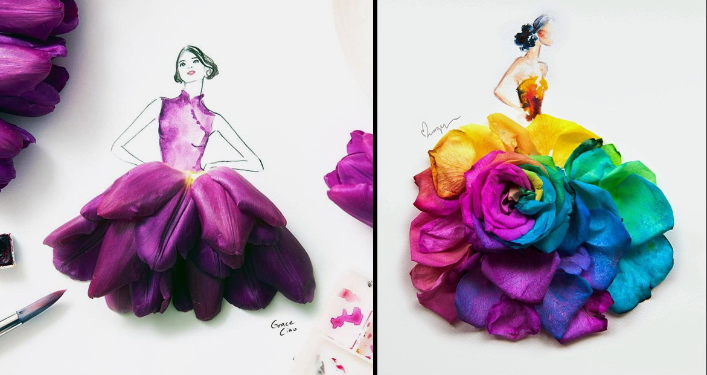

La moda permite mostrar y percibir la cultura. El arte identifica y hace propia la cultura; y tanto esta, como el arte, inspiran y le dan nuevos referentes a la moda. Así que hay una relación estrecha entre las tres. En la historia ha habido momentos clave en los que se evidenciaron estas conexiones.En la historia ha habido momentos clave en los que se evidenciaron estas conexiones. En la época del movimiento del diseño, llamada Art Déco (1920-1939), la moda influyó en el arte. Europa tenía una economía próspera y de gran lujo en el vestir. París era la capital de las tendencias con casas como Lanvin, Poiret o Paquin, entre otras. Pintores como George Barbier, Etienne Drian o Armand Valle, elaboraron maravillosas ilustraciones de moda que fueron obras de arte.
En 1937, entre las dos guerras mundiales, los diseñadores estaban fascinados con el surrealismo. El trabajo entre los creadores de la moda y los artistas le dio a la primera otro rango, un nivel más elevado. Un ejemplo de estas colaboraciones fue el famoso Lobster Dress, creado por la italiana Elsa Schiaparelli y el gran Salvador Dalí.
Casi tres décadas después, en 1965, el diseñador francés Yves Saint Laurent se inspiró en la obra del pintor vanguardista holandés Piet Mondrian y sus creaciones causaron furor: “La moda no es un arte, pero para dedicarse a ella hay que ser un artista (...) Mondrian fue el primer artista cuyo rigor no podía sino seducirme, también Matisse, Braque, Picasso, Bonnard, Léger. ¿Como habría podido resistirme al ‘pop-art’, que fue la expresión de mi juventud?”, afirmaría Saint Lauren. Y, por supuesto, hallaremos más de esa mezcla estimulante entre arte, moda y cultura en los años del movimiento contracultural, libertario y pacifista llamado la época hippie (en esos creativos sesenta).
Encontramos esas conexiones en las piezas del diseñador japonés Issey Miyake, quien combina el diseño y la tecnología para la exploración conceptual indicativa de lo natural, tanto en sus colecciones como en sus diseños. Estos son referidos no como prendas o conjuntos prêt-à-porter, sino más bien como ‘arquitectura del arte’. Miyake obtuvo el Premio Kioto de Arte y Filosofía en 2006. En 2005 recibió el Praemium Imperiale de Escultura, galardón de arte otorgado desde 1989 por la familia imperial japonesa.
También son muy comunes las alianzas entre las grandes firmas de moda y los artistas para cocrear piezas como carteras de cuero y zapatos. La casa de lujo Louis Vuitton ha trabajado con el artista indonesio Eko Nugroho, quien diseñó una pañoleta para una de las recientes colecciones de la marca.
En Colombia esta fusión entre la moda, el arte y la cultura es muy frecuente. Basta revisar cómo varios diseñadores nacionales han intervenido las mochilas wayúu de La Guajira, convirtiéndolas en piezas únicas. Adriana Santacruz, abanderada del trabajo artesanal –sus piezas son consideradas obras de arte– ha sido ganadora del premio Lápiz de Acero, en la categoría de moda (este es solo otro ejemplo, entre muchos).
